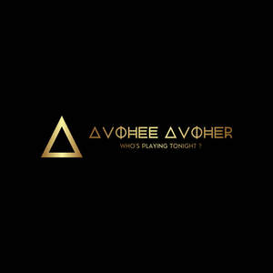

Trade Mark Journal No.2025/026 27 June 2025
UK00004219189 15 June 2025 (9,15,16,18,25,41)

- Class 9
- Music recordings; Tape recordings of music; Downloadable music sound recordings; Musical recordings; Music tapes; Musical video recordings; Musical sound recordings; Downloadable musical sound recordings; Audio recordings; Music cassettes; Prerecorded music audio tapes; Sound recordings; Audio tapes featuring music; Downloadable video recordings featuring music; Records [sound recordings]; Multi-media recordings; Series of musical sound recordings; Prerecorded music videos; Video recordings; Phonograph records featuring music; Audiovisual recordings; Prerecorded audio tapes featuring music; Downloadable sound recordings; Pre-recorded CDs featuring music; Pre-recorded audio cassettes featuring music; Digital recordings; Music headphones; Prerecorded video tapes featuring music; Musical recordings in the form of discs; Pre-recorded video tapes featuring music; Audio visual recordings; Sound recording tapes; Prerecorded video cassettes featuring music; Music software; Instruments for recording sound; Downloadable video recordings; Tapes for bearing audio recordings; Prerecorded non-musical audio tapes; Sound recording discs; Digital music players; Pre-recorded DVDs featuring music; Chips containing musical recordings; Instruments for recording images; Downloadable music files; Downloadable digital music; Prerecorded music compact discs; Pre-recorded laser discs featuring music; Magnetic recordings; Musical cassettes; Blank CD-ROMs for sound or video recording; Optical discs featuring music; Prerecorded compact discs featuring music.
- Class 15
- Musical instruments; Instruments (Musical -); Mechanical musical instruments; Parts of musical instruments; Electrical musical instruments; Electronic musical instruments; Cases for musical instruments; Electronic practice mutes for musical instruments; Organs [musical instruments]; Mouthpieces for musical instruments; Catgut for musical instruments; Synthesizers [musical instruments]; Stringed musical instruments; Woodwind musical instruments; Devices for tuning musical instruments; Tuning devices for musical instruments; Electronic musical apparatus and instruments; Tuning apparatus for musical instruments; Flutes being musical instruments; Electric musical instruments; Valves for musical instruments; Cases adapted for musical instruments; Recorders [musical instruments]; Tripods for musical instruments; Percussion instruments [musical]; Musical instrument cases; Cornets [musical instruments]; Percussion musical instruments; Mallets for musical instruments; Tuners for electronic musical instruments; Handbells [musical instruments]; Electronic synthesizers being musical instruments; Carillons [musical instruments]; Keyboards for musical instruments; Electronic keyboards [musical instruments]; Tuners for musical instruments; Dampers for musical instruments; Drums [musical instruments]; Music rests for musical instruments; Music stands adapted for use with musical instruments; Carrying cases for musical instruments; Colophony for stringed musical instruments; Basses [musical instruments]; Reeds being parts of musical instruments; Musical instruments in the nature of steel drums; Musical instruments for children; Musical instrument harnesses; Electric and electronic musical instruments; Mutes for musical instruments; Horns [musical instruments]; Rattles [musical instruments]; Bellows for musical instruments; Bows for musical instruments; Chimes [musical instruments]; Tongues [parts of musical instruments]; Western style musical instruments; Pegs for musical instruments; Reeds [musical instruments]; Electric carillons [musical instruments]; Strings for musical instruments; Reeds for musical instruments; Strings for western musical instruments; Keys for musical instruments; Electronic apparatus for synthesising music [musical instrument]; Bridges for musical instruments; Electric keyboards [musical instruments]; Pedals for musical instruments; Mechanical, electric and electronic musical instruments; Whistles [musical instruments]; Stands for musical instruments; Japanese traditional musical instruments; Traditional Japanese musical instruments; Keyboard instruments [musical]; Strings for Western style musical instruments; Sound effects machines being musical instruments; Drums [musical instrument]; Rosin for stringed musical instruments; Electronic musical instrument tuners; Fingerboards for stringed musical instruments; Straps for musical instruments; Wind instruments [musical]; Musical wind instruments; Steel drums [musical instruments]; Computer controlled musical instruments; Musical instruments incorporating arrangements for producing audio signals; Picks for stringed musical instruments; Metal bells [musical instruments]; Triangles [musical instruments]; Rainmaker [musical instruments]; Racks adapted to hold musical instruments; Balalaikas [stringed musical instruments]; Mouthpiece caps for musical instruments; Drum pedals [musical instruments]; Musical instruments incorporating apparatus for producing audio signals; Electronic musical apparatus for practice; Covers (Shaped -) for musical instruments; Electronic melody instruments; Ebonite mouth pieces for musical instruments; Jews' harps [musical instruments]; Sound effects pedals for musical instruments; Musical accessories; Musical instrument straps; Hats with bells [musical instruments]; Bow nuts for musical instruments; Musical instruments incorporating arrangements for modifying audio signals; Musical instrument stands; Electronically operated musical instruments; Horsehair for bows for musical instruments; Sticks for bows for musical instruments; Bags specially adapted for holding musical instruments.
- Class 16
- Printed music; Printed music books; Printed educational materials; Printed teaching materials; Printed sheet music; Printed teaching material; Printed training materials; Printed packaging materials of paper; Printed periodicals in the field of music; Printed promotional material; Sheet music in printed form; Printed books in the field of music education; Printed instructional material on telecommunications; Printed correspondence course materials; Printed material in the nature of color samples; Printed art reproductions; Printed books; Printed visuals; Paper crafts materials; Printed curricula; Packaging materials made of recycled paper; Printed publications; Publications (Printed -); Decoration and art materials and media; Forms, printed; Printed forms; Materials for artists; Printed lectures; Printed periodicals in the field of dance; Paper teaching materials; Printed periodicals; Printed booklets; Photographs [printed]; Printed photographs; Binding materials for books and papers; Printed publications relating to computers; Printed informational sheets; Printed stationery; Writing materials; Covering materials for books; Printed periodicals in the field of movies; Printed pamphlets; Printed brochures; Printed paper labels; Music books; Printed lessons; Bookbinding materials; Printed information sheets; Music sheets; Software programmes in printed form; Packaging materials; Computer programmes in printed form; Printed advertisements; Packaging materials made of cardboard; Printed greeting cards with electronic information stored therein; Computer programs in printed form; Printed informational flyers; Printed manuals; Printed flyers; Drawing materials; Instructional materials; Printed patterns for costumes; Printed advertising boards of paper; Printed periodicals in the field of figurative arts; Printed informational cards; Printed patterns; Printed cardboard invitations; Bookbinding material.
- Class 18
- Bags; Tote bags; Luggage bags; Duffle bags; Duffel bags; Carry-on bags; Toiletry bags; Bags for clothes; Drawstring bags; Carry-all bags; Belt bags and hip bags; Nose bags [feed bags]; Bags (Nose -) [feed bags]; Carrying bags; Grocery tote bags; Cross-body bags; Bags for umbrellas; Diaper bags; Luggage, bags, wallets and other carriers; Crossbody bags; Cloth bags; Bucket bags; Leather bags; Sling bags; Nappy bags; Canvas bags; Duffel bags for travel; Belt bags; Shoe bags; Clutch bags; Wheeled bags; Kit bags; Messenger bags; Souvenir bags; Travel bags; Bags for travel; Garment bags; Leather bags and wallets; Shoulder bags; Toilet bags; Make-up bags; Cosmetic bags; Waterproof bags; Reusable shopping bags; Makeup bags; Umbrella bags; Camping bags; Towelling bags; Courier bags; Bags for campers; Roll bags; Bags for carrying pets; Gym bags; Bags [envelopes, pouches] of leather, for packaging; Bags [envelopes, pouches] of leather for packaging; Bags [envelopes, pouches] for packaging of leather; Knitted bags; Attaché bags; Hand bags; Travelling bags; Cabin bags; Flight bags; Traveling bags; Overnight bags; Beach bags; Bags for climbers; Boot bags; Mesh shopping bags; Mesh bags for shopping; Leather shopping bags; Canvas shopping bags; Knitting bags; Bum bags; Hiking bags; Frames for bags [structural parts of bags]; Roller bags; Suit bags; Nose bags; Hunting bags; Baby carrying bags; Wash bags for carrying toiletries; Gladstone bags; Feed bags; Waist bags.
- Class 25
- Clothing; Ready-to-wear clothing; Knitwear [clothing]; Clothing for sports; Sports clothing; Parts of clothing, footwear and headgear; Casual clothing; Athletic clothing; Jackets being sports clothing; Jackets [clothing]; Woolen clothing; Headbands [clothing]; Jerseys [clothing]; Denims [clothing]; Fashion hats; Cashmere clothing; Furs [clothing]; Leisure clothing; Leather clothing; Clothing of leather; Leather (Clothing of -); Garments for protecting clothing; Men's clothing; Clothing for leisure wear; Playsuits [clothing]; Dance clothing; Corsets [clothing, foundation garments]; Embroidered clothing; Shorts [clothing]; Bandeaux [clothing]; Aprons [clothing]; Triathlon clothing; Layettes [clothing]; Clothing layettes; Gabardines [clothing]; Clothing for cycling; Capes (clothing); Maternity clothing; Knitted clothing; Silk clothing; Foulards [clothing articles]; Gloves for apparel; Linen clothing; Kerchiefs [clothing]; Clothing for skiing; Clothing for gymnastics; Gloves [clothing]; Gloves as clothing; Sportswear; Latex clothing; Sports garments; Collars [clothing]; Ready-made clothing; Wristbands [clothing]; Woven clothing; Visors [clothing]; Veils [clothing]; Jackets (Stuff -) [clothing]; Stuff jackets [clothing]; Muffs [clothing]; Quilted jackets [clothing]; Belts [clothing]; Belts for clothing; Oilskins [clothing]; Fishing clothing; Articles of clothing; Windproof clothing; Party hats [clothing]; Clothes for sports; Trunks being clothing; Clothing for wear in wrestling games; Beach clothing; Rainproof clothing; Hoods [clothing]; Articles of sports clothing; Bottoms [clothing]; Plush clothing; Water-resistant clothing; Tops [clothing]; Ties [clothing]; Thermal clothing; Infant clothing; Fabric belts [clothing].
- Class 41
- Live music performances; Live musical performances; Live music concerts; Music performances; Live band performances; Band performances (Live -); Live musical theater performances; Live musical concerts; Live music shows; Entertainment in the nature of live dance performances; Presentation of live dance performances; Provision of live musical performances; Organisation of live musical performances; Live performances by a musical bands; Production of live performances; Presentation of live entertainment performances; Entertainment in the nature of live performances by musical bands; Live performances by a musical band; Presentation of live performances by musical bands; Live music services; Performances (Presentation of live -); Live performances (Presentation of -); Presentation of live performances; Presentation of live comedy performances; Music concerts; Provision of live music; Organisation of live performances; Arranging of music performances; Production of music concerts; Presentation of live show performances; Performance of music; Live dance exhibitions; Presentation of live performances by a musical group; Direction of music performances; Musical performances; Presentation of music concerts; Live band performance services; Theatrical performances both animated and live action; Entertainment in the nature of live performances by rock groups; Services providing entertainment in the form of live musical performances; Entertainment in the form of live musical performances (Services providing -); Presentation of live Christmas musical productions; Performance of music and singing; Entertainment in the nature of dance performances; Presentation of live performances by rock groups; Live entertainment; Provision of facilities for live band performances; Live performances by rock groups; Performance of dance, music and drama; Entertainment in the nature of orchestra performances; Production of live entertainment events; Live demonstrations for entertainment; Production of live entertainment; Arranging and presenting of live performances; Entertainment services in the nature of live performances of roller skating exhibitions and competitions; Music concert services; Theatre performances; Conducting of live entertainment events; Recording of music; Music recording; Entertainment services in the form of concert performances; Theater performances; Entertainment in the nature of ballet performances; Presentation of live entertainment events; Entertainment in the nature of symphony orchestra performances; Live performance services; Presentation of musical performances; Performing of music and singing; Production of live entertainment features; Presentation of musical concerts; Organisation of music concerts; Production of sound and music recordings; Production of live shows; Production of music shows; Pop music concerts (Organisation of -); Live comedy shows; Music performance services; Theatrical performances; Presentation of live comedy shows; Entertainment in the nature of live performances and personal appearances by a costumed character; Entertainment services for producing live shows; Live stage shows; Jazz music entertainment services; Production of live television programmes for entertainment; Preparing subtitles for live theatrical events; Presentation of orchestra performances; Music publishing and music recording services; Production of revue shows before live audiences; Entertainment services in the form of musical vocal group performances; Musical concerts by radio; Music recording studio services; Musical concerts by television; Live entertainment production services; Live show production services; Production of music; Music production; Music festival services; Organisation of musical performances; Entertainment services in the form of musical group performances; Live entertainment services; Conducting of live sports events; Arranging and conducting of live entertainment events; Circus performances; Entertainment in the nature of gymnastic performances; Production of entertainment shows featuring dancers and singers; Musical concert services; Production of live television programmes; Arranging of music shows; Production of musical recordings; Organisation of ice skating shows for live audiences; Artistic management of music venues; Production of entertainment shows featuring singers; Arranging and conducting of music concerts; Selection and compilation of pre-recorded music for broadcasting by others; Entertainment services in the form of cinema performances; Production of theatrical performances; Rental of phonographic and music recordings; Presentation of theatrical performances; Production of entertainment in the form of sound recordings; Provision of live entertainment; Music entertainment services; Conducting of live esports events; Performance of musical programmes.
Paul Andrew Loizou